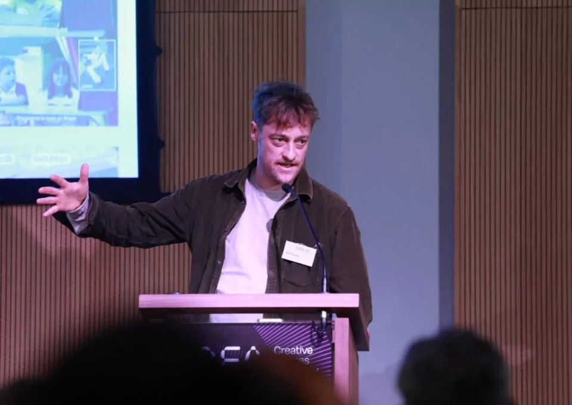

Human Centred Transformation
Wove Group is a strategic design studio in Dublin. We help public bodies, cultural organisations and mission-led companies change how they work, with strategy, design and technology woven together.


Working with
Circular.ie
Helping citizens in Ireland move towards a circular economy.
- Teams
- Labs, Strategy, Brand and Digital
- Themes
- Circular economy, Public services
- Projects
- 6


You have a policy to deliver, a service to fix or a change to land with staff and the public. We help you do it with the people it affects.
- LabsTry an idea before you commit to it.Research and development for a more human future.
- StrategyTurn a policy into a plan your teams can act on.Helping organisations plan, prioritise and change in lasting ways.
- BrandExplain the change so the public and your staff get it.Identities, content and campaigns that culturally connect.
- DigitalBuild the service, and keep it working after launch.Platforms and innovation that help you deliver and scale impact.
Over 20 years partnering with clients across the civic, cultural and private sectors
Public bodies
- Circular.ie
- Tailte Éireann
- Central Bank of Ireland
- Cavan County Council
Mission-led organisations
- Feirm Co-op
- Fórsa
- Irish Georgian Society
- Workhouse Union
Cultural organisations
- The Abbey Theatre
- Dublin Dance Festival
- Dublin Theatre Festival
- Science Gallery International
Research and education
- Research Ireland
- ADAPT Centre
- DCU Innovate
- DCU Educational Trust
What we work on
How do we make services work better for people?

Toolkits underway for Tailte Éireann’s 1,100 staff

Building a future-proofed platform for multiple audiences

Creating frameworks that turn policy into citizen focussed action

Public Services conference
How do we help people waste less?

How do you launch a national campaign for something people have never heard of?

How citizen workshops helped us understand what circularity means for people

How do you build a brand that makes circular living feel desirable and accessible?

Launch of Circular Lab at The Rediscovery Centre
How do we earn people’s trust with their data?
More data and privacy workHow do we bring more people to the arts?

Shaping Ireland’s Creative Future

Cat, Ciara and Erin went to the launch of Dublin Dance Festival’s 2026 programme

What if kids helped us connect with art in richer ways?
How do we help people learn what comes next?
More education workHow do we help mission-led organisations grow?
We haven’t written about this work yet. These are some of the organisations we work with.
- Feirm Co-op
- Fórsa
- Irish Georgian Society
- Workhouse Union
- McAuley Place
What could things look like in ten years?
More futures work
The people doing the work
Working together from Clarendon Street in Dublin.